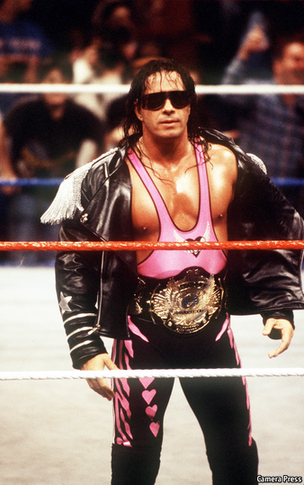

Text
2021-03-23T14:11:45+00:00
Platform economics
平台经济
平台經濟
The price of fame
名气的价格
名氣的價格
What is a celebrity worth?
名人身价几何？
名人身價幾何？
“THE WRITER of this piece deserves a big raise,” says Bret “The Hitman” Hart, a professional wrestler from the 1990s. “He is the best there is, the best there was, the best there ever will be,” he adds, echoing his old catchphrase. Your correspondent paid Mr Hart $150 to sing his praises.
“应该给这篇文章的作者大幅加薪，”上世纪90年代人称“杀手”的职业摔跤手布雷特·哈特（Bret Hart）说。“他现在是最强的，过去是最强的，未来也是最强的。”他又补了一句，把自己那句名言改了改。为了让哈特说出这句赞扬，笔者支付给他150美元。
“應該給這篇文章的作者大幅加薪，”上世紀90年代人稱“殺手”的職業摔跤手布雷特·哈特（Bret Hart）說。“他現在是最強的，過去是最強的，未來也是最強的。”他又補了一句，把自己那句名言改了改。為了讓哈特說出這句讚揚，筆者支付給他150美元。
Mr Hart is one of over 10,000 celebrities on Cameo, an online service where anyone can commission famous people to film short messages. Its popularity has surged as celebrities seek new sources of income and confined consumers look for ways to spend money. Last year they paid some $100m for 1.3m videos, more than in the previous three years combined. Talent on the site ranges from Jack Nicklaus, a golfer ($1,000 per clip), and Vicente Fox, a former president of Mexico ($300), to Barkley the Dog, a dog ($5).
哈特是线上服务Cameo上的一万多位名人之一。在这个平台上，任何人都能付费委托知名人士录制定制的短视频消息。时下名人们正在寻求新的收入来源，而困在家中的消费者寻找新的花钱渠道，推动了Cameo迅速蹿红。去年，消费者为130万条视频付费约一亿美元，超过之前三年的总额。网站上的才艺达人形形色色，有高尔夫球手杰克·尼克劳斯（Jack Niclaus），每条视频收费1000美元；墨西哥前总统文森特·福克斯（Vincente Fox），每条300美元；狗狗巴克利（Barkley the Dog），每条五美元。
哈特是線上服務Cameo上的一萬多位名人之一。在這個平台上，任何人都能付費委託知名人士錄製定製的短視頻消息。時下名人們正在尋求新的收入來源，而困在家中的消費者尋找新的花錢渠道，推動了Cameo迅速躥紅。去年，消費者為130萬條視頻付費約一億美元，超過之前三年的總額。網站上的才藝達人形形色色，有高爾夫球手傑克·尼克勞斯（Jack Niclaus），每條視頻收費1000美元；墨西哥前總統文森特·福克斯（Vincente Fox），每條300美元；狗狗巴克利（Barkley the Dog），每條五美元。
Cameo, like Uber, is a two-sided market. But most Uber users don’t care what car shows up, as long as it is clean, safe and gets them to their destination. On Cameo, the emotional connection between a fan and a star matters. “The price that a market will bear depends on the value being created for a potential customer,” says Jill Avery, a professor at Harvard Business School who has studied how online influencers price themselves. But “value” is hard to measure when it comes down to emotion.
Cameo和优步一样，是个双边市场。但大多数优步用户并不关心召来的是什么车，只要它干净、安全、能把自己送达目的地就行了。而在Cameo上，粉丝和明星之间的情感联结很重要。“市场能够承受多高的价格，要看为潜在客户创造出了多少价值。”哈佛商学院研究网红如何自我定价的教授吉尔·艾弗瑞（Jill Avery）表示。但若这“价值”归结为情感，就难以衡量了。
Cameo和優步一樣，是個雙邊市場。但大多數優步用戶並不關心召來的是什麼車，只要它乾淨、安全、能把自己送達目的地就行了。而在Cameo上，粉絲和明星之間的情感聯結很重要。“市場能夠承受多高的價格，要看為潛在客戶創造出了多少價值。”哈佛商學院研究網紅如何自我定價的教授吉爾·艾弗瑞（Jill Avery）表示。但若這“價值”歸結為情感，就難以衡量了。
How do celebrities figure out their fees? One way is through a simple opportunity-cost calculation. Steven Galanis, Cameo’s boss, recalls speaking to a basketball player on an annual $25m contract. For a 40-hour work-week with a fortnight of holiday, that is $208 per minute. “If he charged $100 and did two or three a minute, he could make more money on Cameo,” says Mr Galanis.
名人是如何计算出自己的收费呢？一种方法是通过简单的机会成本计算。Cameo的老板史蒂芬·加拉尼斯（Steven Galanis）回忆自己曾和一位篮球运动员交谈。对方年薪2500万美元，按每周工作40小时、一年两周假期计算，相当于每分钟收入208美元。“如果他收费100美元，一分钟做两三个视频，那他在Cameo上能赚更多。”加拉尼斯说。
名人是如何計算出自己的收費呢？一種方法是通過簡單的機會成本計算。Cameo的老闆史蒂芬·加拉尼斯（Steven Galanis）回憶自己曾和一位籃球運動員交談。對方年薪2500萬美元，按每周工作40小時、一年兩周假期計算，相當於每分鐘收入208美元。“如果他收費100美元，一分鐘做兩三個視頻，那他在Cameo上能賺更多。”加拉尼斯說。
Most celebrities are freelance, though. They can try one of two strategies, says Ms Avery. One is “price skimming”—starting high and then lowering the price as demand ebbs. The second is “price penetration”, pricing low to maximise volume. Celebrities often use both, depending on how much time they have.
不过，大多数名人都是自由职业者。艾弗瑞说，他们可以尝试两种策略之一。第一种是“撇脂定价”——起价高，随着市场需求的减少再降下来。第二种是“渗透定价”——收费低，以实现销量最大化。名人通常两种都会用，主要看他们有多少时间。
不過，大多數名人都是自由職業者。艾弗瑞說，他們可以嘗試兩種策略之一。第一種是“撇脂定價”——起價高，隨着市場需求的減少再降下來。第二種是“滲透定價”——收費低，以實現銷量最大化。名人通常兩種都會用，主要看他們有多少時間。
Another method is to test the market. This is surprisingly underused. Though celebrities can change their prices as often as they like, only about 30% have done so at least once, and less than 10% have done so more than five times.
还有一种方法是试探市场。出人意料的是，这种方法远没有被充分利用。虽然名人们可以随心所欲地更改定价，但只有约30%的人至少改过一次，不到10%的人改过五次以上。
還有一種方法是試探市場。出人意料的是，這種方法遠沒有被充分利用。雖然名人們可以隨心所欲地更改定價，但只有約30%的人至少改過一次，不到10%的人改過五次以上。
Less rational reasons are at play, too. Snoop Dogg, a rapper famous for smoking copious amounts of weed, insisted on charging $420, a number associated with pot culture. He could not keep up with demand and eventually raised his fee to $1,000. Others charge a premium over perceived rivals or, led by ego, overprice themselves. But reality eventually intervenes. Mr Galanis remembers a TV personality who started at $60 and found that demand was inelastic all the way up to $99. But when she raised her price to $125, demand dropped by half. Value, like fame, is eventually decided by the fans.
不太理性的原因也在起作用。以吸食大量大麻出名的说唱歌手史努比狗狗（Snoop Dogg）原本坚持收费420美元，因为这个数字与大麻文化相关。但因为市场需求太大，他最终把收费提高到1000美元。其他人或是比心目中的对手收得更高些，或是在自尊心的驱使下给自己定价过高。但现实最终会教他们做人。加拉尼斯想起一位从60美元起步的电视名人，她发现一路提到99美元需求都没有什么变化。但当她涨价到125美元时，需求瞬间跌去一半。看来，所谓的价值，和名气一样，最终还是粉丝说了算。
不太理性的原因也在起作用。以吸食大量大麻出名的說唱歌手史努比狗狗（Snoop Dogg）原本堅持收費420美元，因為這個數字與大麻文化相關。但因為市場需求太大，他最終把收費提高到1000美元。其他人或是比心目中的對手收得更高些，或是在自尊心的驅使下給自己定價過高。但現實最終會教他們做人。加拉尼斯想起一位從60美元起步的電視名人，她發現一路提到99美元需求都沒有什麼變化。但當她漲價到125美元時，需求瞬間跌去一半。看來，所謂的價值，和名氣一樣，最終還是粉絲說了算。